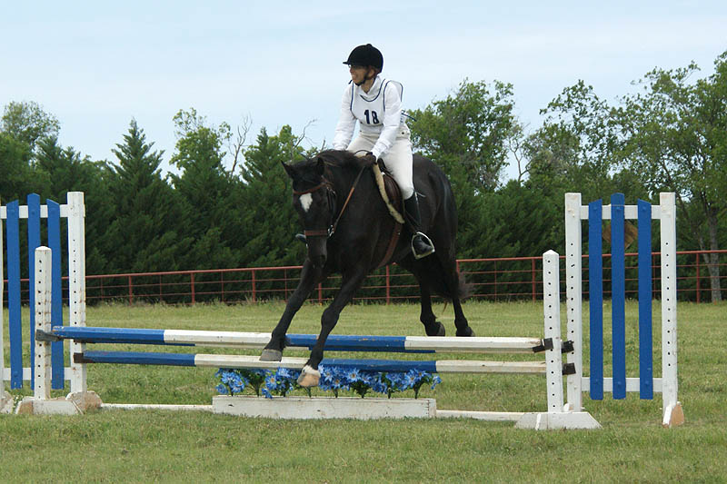

Horse Trial at Curragh
Miaren and I at another horse trial. This one we chalk up as a good experience. We had a bobble in the stadium round
that took us out of the running. It was still a great experience. He knew what was coming for the day and I learned I can
deal with him being eager and forward out on cross country. Still a lot of finesse
to work on, but cross country was great!
Heading out Saturday to practice
the cross country course.
The fences looked a whole lot bigger when I was on the course.
I was worried about the drop on course, but he's gotten so much better at not questioning
and doing what's asked of him.
He was great for schooling. A bit excited watching Thuy do the Elementary course,
but kind and calm when we started jumping.
Trotting him in he does dive down some. I want to be kind, but this is something
we're still discussing.
He hesitated here, but no fight and the day of the show there was no question about
him going over.
I like when there are two jumps in a row. It gives us more focus
He also gave more effort.
Yep, we need to start thinking about Novice.
This is what we do for fun.
We'll just tool around the pasture in this flying trot. I think he likes it, too.
Fine over the pony barn and cantered around to the W jump.
On to the next fence. He's so shiny right now.
On an uphill run I tried to let him out a little.

He was stretched out a little, but I need to get a bit more trust to also give him
his head when we do this.
Cobby trot through the water.
I just don't see this bulk in him when I'm on the ground looking at him.
A good effort out of the water.
Not so sure about the drop down.

It took Amanda going in first with Thuy (literally - Amanda also went in the water
and while we were laughing Miaren decided to jump in.)
An easy landing in. No big leap for us.
The last jump on course. He put some effort into it.
I gave him his head a bit more. Then telling him with the inside rein a turn is
coming up. Instead of flexing, his mouth opens.

Then a little bend.
And a nice balanced turn with a softening of the inside rein to tell him he got
it right.
He was eager in the warm up, but we had some good canter work.
He got strong at times in dressage. Our score was a 34%. There were parts I would
have liked to improve, but that's what the future is for.
I love when his trot is swingy.
He still doesn't arch through his withers consistently.
But it happens more and more often.
I remembered to push him into the walk.
He gave me as good a walk as we've probably ever had.
Canter transition was obedient, but he had opinions.
The judge said strung out. I know the feel I want and didn't exactly have it. The
horse warming up to go after us was cantering around and every once in a while I
felt a scoot from Miaren.
He'd get strong and I'd work to keep him under control.
At least he'd usually come back to me.
When he's like this I can be more subtle and he can start to hear me.
I have to remember to keep leg and seat going or with just hands he'd come back
to the trot. Definitely work for both of us.
I like that the canter doesn't bother our trot work too much.
This transition was more obedient.
We had a couple more balanced strides than the other way before we had to start
discussing things.
Slowing down isn't the same as balancing.
I was happy with the test.
He took off early, I was really not ready and we're just glad my seat and legs are
tight.
I circled around before taking this one. Lost my whip, didn't have the reins and
someone said I pushed my glasses back up, too. Came back around and was ready for
it this time.
Just happy that we came back together after the first horrible jump.

Diving a bit over three.
Asking for a balanced canter to 4 and getting it.
But still flying his fences for the fun of it.
Much better after a fairly severe half halt to get his attention.
If I'm grinning we must be having fun.
After Novice last month he'd add effort for no reason.

Nicely done.
He felt strong and forward, but we had time faults from the 2nd fence circle.
Finally together for the last jump.
Slowing up after the finish flags. Much more impressive than the horse I see lounging
in my pasture.